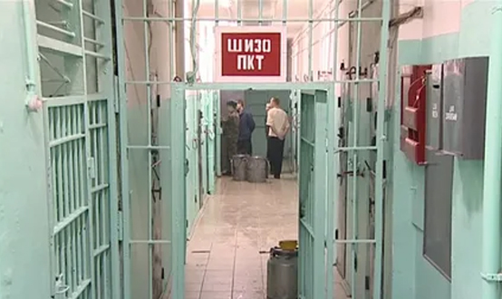
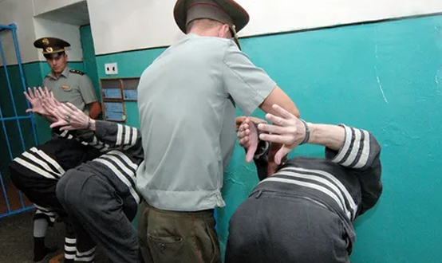

Общая характеристика преступлений против основ конституционного строя и безопасности государства (государственных преступлений)
Преступления против основ конституционного строя и безопасности государства (государственные преступления) собраны в главе 29 УК РФ (ст. 275–284.2.).
Видовым объектом этих преступлений являются основы конституционного строя, которые, в частности, включают в себя: внешнюю безопасность (состояние защищенности суверенитета, территориальной целостности и обороноспособности страны от внешнего воздействия); стабильность политической системы; экономическую безопасность и обороноспособность; национальное, расовое или религиозное равноправие.
Объективная сторона большей части рассматриваемых преступлений характеризуется активными действиями. Преступление считается оконченным с момента совершения деяния, преступные последствия не имеют значения. Исключениями являются разглашение государственной тайны (ст. 283 УК) и утрата документов, составляющих государственную тайну (ст. 284 УК) – эти составы являются материальными, а деяния считаются оконченными при наступлении преступных последствий. Преступления данной категории характеризуются повышенной степенью общественной опасности (так, государственная измена влечет за собой лишение свободы на срок от двенадцати до двадцати лет).
Субъективная сторона всех рассматриваемых преступлений, за исключением утраты документов, содержащих государственную тайну, характеризуется прямым умыслом. Мотив и цель могут являться обязательными признаками субъективной стороны (ст. 277 – посягательство на жизнь государственного или общественного деятеля, совершенное в целях прекращения его государственной или иной политической деятельности либо из мести за такую деятельность; ст. 279 – организация вооруженного мятежа либо активное участие в нем в целях свержения или насильственного изменения конституционного строя РФ либо нарушения территориальной целостности РФ; ст. 281 – совершение взрыва, поджога или иных действий, направленных на разрушение или повреждение предприятий, сооружений, объектов транспортной инфраструктуры и транспортных средств, средств связи, объектов жизнеобеспечения населения в целях подрыва экономической безопасности и обороноспособности РФ).
Субъект рассматриваемых преступлений, как правило, общий — физическое, вменяемое лицо, достигшее 16 лет. Специальный субъект предусмотрен в ст. 275 и 276 УК по признаку гражданства: государственную измену может совершить только гражданин России, шпионаж (ст. 276 УК) — иностранный гражданин или лицо без гражданства. В ст. 283 и 284 УК речь идет о лицах, которым государственная тайна вверена или стала известна по службе.
Виды преступлений против основ конституционного строя и безопасности государства
Данную группу преступлений можно классифицировать следующим образом:
1) преступления против внешней безопасности государства:
- ст. 275 УК – государственная измена (совершенные гражданином РФ шпионаж, выдача иностранному государству, международной либо иностранной организации сведений, составляющих государственную тайну, переход на сторону противника либо оказание финансовой, материально-технической, консультационной или иной помощи иностранному государству, международной либо иностранной организации, направленной против безопасности РФ);
- ст. 275.1. – сотрудничество на конфиденциальной основе с иностранным государством, международной либо иностранной организацией (в целях оказания им содействия в деятельности, заведомо направленной против безопасности РФ, при отсутствии признаков государственной измены);
- ст. 276 УК – шпионаж (передача, собирание, похищение или хранение в целях передачи иностранному государству, международной либо иностранной организации сведений, составляющих государственную тайну, а также передача или собирание по заданию иностранной разведки или лица, действующего в ее интересах, иных сведений для использования их против безопасности РФ, если эти деяния совершены иностранным гражданином или лицом без гражданства);
- ст. 280.3. – публичные действия, направленные на дискредитацию использования Вооруженных Сил РФ в целях защиты интересов РФ и ее граждан, поддержания международного мира и безопасности или исполнения государственными органами РФ своих полномочий в указанных целях;
2) преступления против внутренней безопасности государства:
- ст. 277 – посягательство на жизнь государственного или общественного деятеля (в целях прекращения его государственной или иной политической деятельности либо из мести за такую деятельность);
- ст. 278 – насильственный захват власти или насильственное удержание власти (в нарушение Конституции РФ, а равно направленные на насильственное изменение конституционного строя РФ);
- ст. 279 – вооруженный мятеж (в целях свержения или насильственного изменения конституционного строя РФ либо нарушения территориальной целостности РФ);
- ст. 280.1. – публичные призывы к осуществлению действий, направленных на нарушение территориальной целостности РФ (лицом после его привлечения к административной ответственности за аналогичное деяние в течение одного года);
- ст. 280.2. – нарушение территориальной целостности Российской Федерации (отчуждение части территории или иные действия, за исключением делимитации, демаркации, редемаркации Государственной границы РФ с сопредельными государствами);
- ст. 281 – диверсия (совершение взрыва, поджога или иных действий, направленных на разрушение или повреждение предприятий, сооружений, объектов транспортной инфраструктуры и транспортных средств, средств связи, объектов жизнеобеспечения населения в целях подрыва экономической безопасности и обороноспособности РФ);
- ст. 284.1. – осуществление деятельности иностранной или международной неправительственной организации, в отношении которой принято решение о признании нежелательной на территории РФ ее деятельности;
- ст. 284.2. – призывы к введению мер ограничительного характера (введение или продление политических или экономических санкций) в отношении Российской Федерации, граждан Российской Федерации или российских юридических лиц;
3) преступления экстремистской направленности:
- ст. 280 – публичные призывы к осуществлению экстремистской деятельности;
- ст. 280.4. – публичные призывы к осуществлению деятельности, направленной против безопасности государства (даче взятки, государственной измене, наемничеству и др.);
- ст. 282 – возбуждение ненависти либо вражды, а равно унижение человеческого достоинства (по признакам пола, расы, национальности, языка, происхождения, отношения к религии, а равно принадлежности к какой-либо социальной группе, совершенные публично лицом после его привлечения к административной ответственности за аналогичное деяние в течение одного года);
- ст. 282.1. – организация экстремистского сообщества;
- ст. 282.2. – организация деятельности экстремистской организации (в отношении которой судом принято решение о ликвидации или запрете деятельности в связи с осуществлением экстремистской деятельности);
- ст. 282.3. – финансирование экстремистской деятельности;
- ст. 282.4. – неоднократные пропаганда либо публичное демонстрирование нацистской атрибутики или символики, либо атрибутики или символики экстремистских организаций, либо иных атрибутики или символики, пропаганда либо публичное демонстрирование которых запрещены федеральными законами;
4) преступления, посягающие на сохранность государственной тайны:
- ст. 283 – разглашение государственной тайны (лицом, которому она была доверена или стала известна по службе, работе, учебе, если эти сведения стали достоянием других лиц, при отсутствии признаков государственной измены и шпионажа);
- ст. 283.1. – незаконное получение сведений, составляющих государственную тайну (путем похищения, обмана, шантажа, принуждения, угрозы применения насилия либо иным незаконным способом, при отсутствии признаков государственной измены и шпионажа);
- ст. 283.2. – нарушение требований по защите государственной тайны (выезд из РФ гражданина РФ, допущенного или ранее допускавшегося к государственной тайне, право которого на выезд заведомо для него ограничено, а также незаконные перемещение или пересылка носителей, содержащих сведения, составляющие государственную тайну, за пределы РФ);
- ст. 284 – утрата документов, содержащих государственную тайну (нарушение лицом, имеющим допуск к государственной тайне, установленных правил обращения с содержащими государственную тайну документами, если это повлекло по неосторожности их утрату и наступление тяжких последствий).